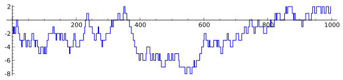

How explicit is the Explicit Formula?
Barry Mazur and William Stein
Rough notes for our combined talk at the AMS Special Session on
Arithmetic Statistics
The Explicit Formulas
The "Explicit Formulas" in analytic number theory deal with
arithmetically interesting quantities, often given as
partial sums-the summands corresponding to primes $p$-up
to some cutoff value $X$. We'll call them "Sums of local data".
Again:
A
"Sum of local data" is a sum of contributions for each prime $p\leq X$:
\delta(X) := \sum_{p\le X}G(p)
where the rules of the game require the values $G(p)$
to be determined by only
local considerations at the prime $p$.
Sums of Local Data
We will be concentrating on
sums of local data
attached to elliptic curves without CM over $\mathbf{Q}$,
\delta_E(X):=\sum_{p\le X}g_E(p)
where the weighting function
p \mapsto g_E(p)
is a specific function of $p$ and $a_E(p)$,
the $p$-th Fourier coefficient of the eigenform of weight two parametrizing the elliptic curve.
Weighted Biases
We will be interested in issues of bias.
Our Aim
Examine computations of these biases, following
the classical "Explicit Formula," and the work of:
Sarnak, Granville, Rubenstein, Watkins, Martin, Fiorilli, Conrey-Snaith, ...
Sign of $a_E(p)$
Four our elliptic curves $E$:
ROUGHLY - half the Fourier coefficients $a_E(p)$ are positive and half negative.
That is: there are roughly as many $p$'s for which the number of rational points of $E$ over $\mathbf{F}_p$ is
greater than $p+1$
as there are primes for which it is
less than $p+1$.
Sign of the $a_E(p)$ - a table
| $\text{Curve}$ | $\text{Positive } a_E(p)\text{ for }p<10^7$ | $\text{Negative }a_E(p)\text{ for }p<10^7$ |
|---|
| 11a (rank 0) | 332169 | 332119 |
| 32a (rank 0; CM) | 166054 | 166126 |
| 37a (rank 1) | 332127 | 332240 |
| 389a (rank 2) | 332317 | 332022 |
| 5077a (rank 3) | 331706 | 332632 |
Finer Statistical Issues
So let's study finer statistical issues related to this symmetric
distribution. For example, we can ask the raw question:
which of these classes of primes are winning the race, and how often?
I.e., what can one say about:
\Delta_E(X) =
\#\{p \text{ such that } |E(\mathbf{F}_p)| > p+1\}
minus
\#\{p \text{ such that } |E(\mathbf{F}_p)| < p+1\}?
Equivalently, putting:
\gamma_E(p) = \begin{cases}
0 & \text{if $p$ is a bad or supersingular prime for $E$},\\
-1 & \text{if $E$ has more than $p+1$ points rational over $\mathbf{F}_p$},\\
+1 & \text{if less}
\end{cases}
\Delta_E(X) = \sum_{p\leq X} \gamma_E(p)
Rank 0 curve 11a ($p<1000$):

Graphs of $\Delta_E(X) = \sum_{p\leq X}\gamma_E(p)$
Rank 0 curve 11a ($p < 10^6$):

Rank 1 curve 37a ($p < 10^6$):

More graphs of $\Delta_E(X) = \sum_{p\leq X}\gamma_E(p)$
Rank 2 curve 389a ($p < 10^6$):

Rank 3 curve 5077a ($p < 10^6$):

More General Weighting Functions
Consider weighting functions $p\mapsto g_E(p)$ that have the property that:
Any such $p \mapsto g_E(p)$ represents a version of a "bias race".
To illustrate specific features of the "Explicit Formula" we focus on
three examples of such races for an elliptic curve $E$.
Three Sums of Local Data
RAW
|
$\Delta_E(X): =\sum_{p\le X}\gamma_E(p)$
|
MEDIUM-RARE
|
${\mathcal D}_E(X):= {\frac{\log\ X}{\sqrt X}}\sum_{p \le X}{\frac{a_E(p)}{\sqrt p}}$
|
WELL-DONE
|
${D}_E(X):= {\frac{1}{\log X}} \sum_{p \le X}{\frac{a_E(p)\log p}{ p}}$
|
The fun here is that there are clean conjectures for the values of the
means (relative to $dX/X$)
-- i.e., the biases--
of the three
"sums of local data" and clean expectations of
their
variances:
(Use mouse to hover over definition above to see a conjecture.)
The well-done data:
The mean is (conjecturally)
$-r :=$ where $r=r_E$ is the analytic rank of $E$.
The medium-rare data:
The mean is (conjecturally) $1-2r$.
The raw data: The mean is (conjecturally)
{\frac{2}{\pi}}- {\frac{16}{3\pi}}r + {\frac{4}{\pi}} \sum_{k=1}^{\infty} (-1)^{k+1}\left[{\frac{1}{2k+1}} + {\frac{1}{2k+3}}\right]r({2k+1}),
where
$r(n) := r_{f_E}(n) =$ the order of vanishing of $L(\text{symm}^n f_E, s)$
at $s=1/2$, with $f_E$ the newform corresponding to $E$ and $s=1/2$
is the central point.